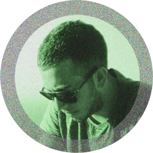

<section class="content about">
	<div class="main-text inner-center">
		<div class="about-img">
	  	
	  </div>
		<span>Hi,</span>
		my name is Waldo Yang and I'm a master student at <a href="https://www.uu.se">Uppsala Universitet</a>.
		Besides my life as a student I enjoy photography. I am self-taught and started my involvement with photography in 2011.
		I like landscapes which emit the feeling of curiosity and enjoyment.
		<ul class="socialss">
			<li><a href="https://instagram.com/{{ site.instagram }}" target="_blank"><i class="fa fa-instagram"></i></a></li>
      <!--<li><a href="{{ site.facebook_page }}" target="_blank"><i class="fa fa-facebook-square"></i></a></li>
      <li><a href="https://twitter.com/{{ site.twitter }}" target="_blank"><i class="fa fa-twitter-square"></i></a></li>-->
		</ul>
		<br>
    <small>
      This site began as a fork of <a href="https://github.com/holman/left">holman/left</a>
      but <a href="http://vangeltzo.com/">Vangelis</a> took it to another
      level with his amazing design. If you want to get in touch, send me an
      <a href="https://mailhide.io/e/mDaBH" onclick="mailhidepopup=window.open('https://mailhide.io/e/mDaBH','mailhidepopup','width=580,height=635'); return false;">e-mail</a>
    </small>
	</div>
</section>
